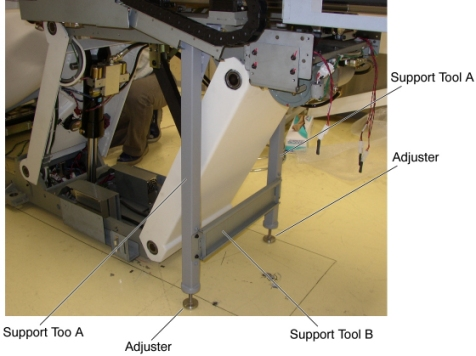
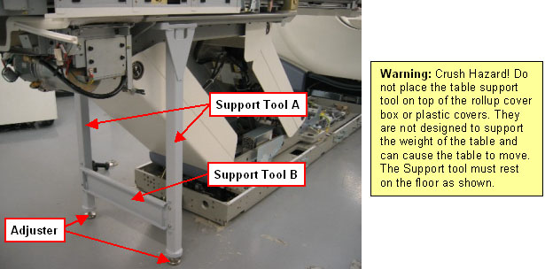
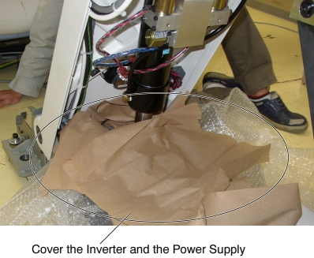
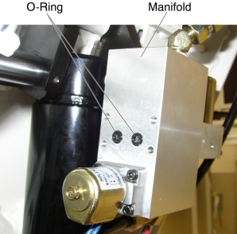
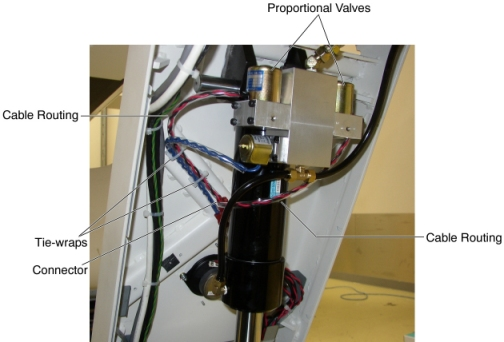

Operating Documentation
Direction 5307452-8EN, Rev# 4
Discovery CT750 HD Service Methods - Adv
Operating Documentation |
| Required Persons | Preliminary Reqs | Procedure | Finalization |
|---|---|---|---|
| 1 |
| Last Revised: | 26 June 2008 |
| Item | Qty | Effectivity | Part# | Manufacturer | |
|---|---|---|---|---|---|
| Table Support Tool | 1 | - | 5138908 | - | |
| Oil-Pan (2 liters) | 1 | - | - | - | |
| Item | Qty | Effectivity | Part# | Manufacturer | |
|---|---|---|---|---|---|
| Proportional Valve Assembly | 1 | - | 5127284 | - | |
| CRASH HAZARD ! | |
| THE TABLE MUST BE SUPPORTED USING THE SUPPORT TOOL AS DESCRIBED BELOW WHEN CHANGING THE PROPORTIONAL VALVE ASSEMBLY. | |
Raise the Table to maximum height.
Move the Cradle and IMS to OUT limit position.
Remove power from Table by turning off 120VAC, Axial Drive and HVDC switches on Service Switch Panel.
Remove the following Table components and covers:
IMS Side Cover (Right/Left)
IMS Rear Cover
Front/Rear Side Plate (Right/Left)
Front Leg Plate (Right/Left)
Illustration 1: Table Covers Removal

Attach the Table Support Tool as follows:
Perform this step if applicable:
(For GT1700 and GT2000 Table) Skip this step.
(For Global PET/CT Table) Release Transporter and manually push up against the rear Hard Stop.
Illustration 2: Table Pushed Against Hard Stop (Global PET/CT Table)

| CRASH HAZARD! | |
| THE TABLE IS VERY HEAVY AND CAN MOVE IF THE GLOBAL PET/CT TABLE TRANSPORTER IS NOT SECURED! | |
| The transporter must be secured from moving before attaching the table support tool. |
Perform this step if applicable:
(For GT1700 and GT2000 Table) Skip this step.
(For Global PET/CT Table) Attach one of the “L” shaped alignment blocks to the front linear rail (The alignment blocks and hardware came with the Table and should have been stored away during install). Tighten bolt as shown in order to secure the Transporter.
Illustration 3: Tighten Alignment Block (Global PET/CT Table)

The adjuster of the support tool A should be partially extended, about 3 cm, before supporting the Table.
Illustration 4: Table Support Tool

Attach the support tool A to the left top frame, and turn the set screw to CCW to fix the support tool A.
Illustration 5: Support Tool 'A' Attachment

Attach the other support tool A to the right top frame, and turn the set (hexagon) screw to CCW to fix the support tool A.
Attach the support tool B to the support tool A using 4 screws.
Extend the adjusters by turning them so that the adjusters touch the floor, and lower the Table onto the support.
Illustration 6: Table Support Tool Attachment (GT1700 and GT2000 Table)

Illustration 7: Table Support Tool Attachment (Global PET/CT Table)

Remove power from Table by turning off 120VAC, Axial Drive and HVDC switches on Service Switch Panel.
Cover the Inverter and the Power Supply to prevent oils contamination.
Illustration 8: Inverter and Power Supply Protection

Cut any tie-wraps holding the valve cable to the Table frame.
Disconnect the cable connectors of the proportional valve.
Put the oil pan under the left proportional valve, and unscrew 4 screws, then remove the left proportional valve.
| NOTE: | A small amount of oil may leak out, but this is acceptable. |
Illustration 9: Proportional Valve Removal

| Properly position the O-ring on the manifold. If not, a oil can be leaked out from the joint. | |
Fit O-rings into the manifold.
Illustration 10: O-rings Installation

Install the new Proportional Valve in place, and tighten the 4 screws.
Route the new valve cable along the old cable.
Illustration 11: Cable Configuration

Connect the valve cable connectors.
Fasten the valve cable to the Table frame with tie-wraps.
Power up the Table from the Service Switch Panel.
Raise the Table to its highest position, and verify that the new proportional valves are securely installed.
Turn off all 3 switches (Axial Drive, HVDC, 120VAC).
Remove the Table Support Tool from the Table.
Power up the Table from the Service Switch Panel.
Perform Elevation Inching Adjustment.
Using the Gantry control keys, raise and lower the Table repeatedly, and verify that the valve cable does not catch or pull excessively.
Turn off all 3 switches (Axial Drive, HVDC, 120VAC), and re-install the Table components and covers.